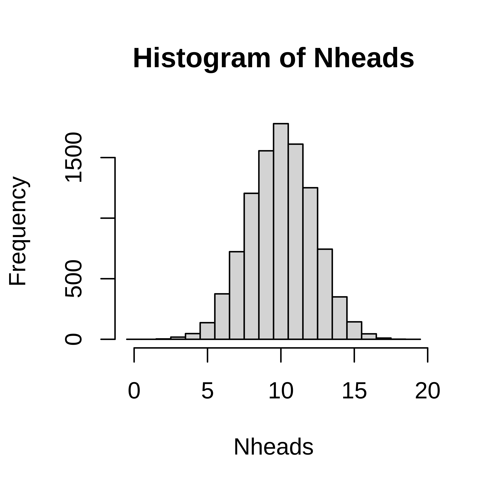

2 Discrete random variables
A discrete random number has countable number of outcome values, such as {1,2,3,4,5,6}; {red, blue, green}; {tiny, small, average, large, huge} or all integers.
A discrete random variable can be described by its probability mass function, pmf.
The probability that the random variable, \(X\), takes the value \(x\) is denoted \(P(X=x) = p(x)\). Note that:
- \(0 \leq p(x) \leq 1\), a probability is always between 0 and 1.
- \(\sum p(x) = 1\), the sum over all possible outcomes is 1.
Example 2.1 The number of dots on a die
When rolling a die the there are six possible outcomes; 1, 2, 3, 4, 5 and 6, each of which have the same probability, if the die is fair. The outcome of one dice roll can be described by a random variable \(X\). The probability of a particular outcome \(x\) is denoted \(P(X=x)\) or \(p(x)\).The probability mass function of a fair six-sided die can be summarized in a table;
| x | 1.00 | 2.00 | 3.00 | 4.00 | 5.00 | 6.00 |
| p(x) | 0.17 | 0.17 | 0.17 | 0.17 | 0.17 | 0.17 |
or in a barplot;
Figure 2.1: Probability mass function of a die.
| non-smoker | smoker | |
|---|---|---|
| x | 0 | 1 |
| p(x) | 0.61 | 0.39 |
Example 2.2 CFU
The number of bacterial colonies on a plate is a random number.Figure 2.2: Probability mass distribution of the number of bacterial colonies on an agar plate.
2.1 Expected value
When the probability mass function is know the expected value of the random variable can be computed.
\[E[X] = \mu = \sum_{i=1}^N x_i p(x_i)\] For a uniform distribution, where every object has the same probability (in the urn model, every object is represented by one ball), the expected value can be computed as the sum of all objects divided by the total number of objects;
\[E[X] = \mu = \frac{1}{N}\sum_{i=1}^N x_i\] Linear transformations and combinations
\[E(aX) = a E(X)\]
\[E(X + Y) = E(X) + E(Y)\]
\[E[aX + bY] = aE[X] + bE[Y]\]
2.2 Variance
The variance is a measure of spread and is defined as the expected value of the squared distance from the expected value;
\[var(X) = \sigma^2 = E[(X-\mu)^2] = \sum_{i=1}^n (x_i-\mu)^2 p(x_i)\] Linear transformations and combinations
\[var(aX) = a^2 var(X)\]
For independent random variables X and Y
\[var(aX + bY) = a^2var(X) + b^2var(Y)\]
2.3 Simulate distributions
Once the distribution is known, we can compute probabilities, such as \(P(X=x), P(X<x)\) and \(P(X \geq x)\). If the distribution is not known, simulation might be the solution.
Example 2.3 Simulate coin toss
In a single coin toss the probabity of heads is 0.5. In 20 coin tosses, what is the probability of at least 15 heads?The outcome of a single coin toss is a random variable, \(X\) with two possible outcomes \(\{H, T\}\). We know that \(P(X=H) = 0.5\). The random variable of interest is the number of heads in 20 coin tosses, \(Y\). The probability that we need to compute is \(P(Y \geq 15)\).

Figure 2.3: A coin toss. Urn model with one black ball (heads) and one white ball (tails).
A single coin toss can be modelled by an urn with two balls. When a ball is drawn randomly from the urn, the probability to get the black ball (heads) is \(P(X=H) = 0.5\).
If we want to simulate tossing 20 coins (or one coin 20 times) we can use the same urn model, if the ball is replaced after each draw.
In R we can simulate random draws from an urn model using the function sample.
## A single coin toss
sample(c("H", "T"), size=1)## [1] "H"## Another coin toss
sample(c("H", "T"), size=1)## [1] "H"Every time you run sample a new coin toss is simulated.
The argument size tells the function how many balls we want to draw from the urn. To draw 20 balls from the urn, set size=20, remember to replace the ball after each draw!
## 20 independent coin tosses
(coins <- sample(c("H", "T"), size=20, replace=TRUE))## [1] "H" "H" "H" "H" "T" "H" "H" "T" "T" "T" "H" "T" "H" "H" "T" "H" "T" "T" "T"
## [20] "T"How many heads did we get in the 20 random draws?
## How many heads?
sum(coins == "H")## [1] 10We can repeat this experiment (toss 20 coins and count the number of heads) several times to estimate the distribution of number of heads in 20 coin tosses.
To do the same thing several times we use the function replicate.
To simulate tossing 20 coins and counting the number of heads 10000 times, do the following;
Nheads <- replicate(10000, {
coins <- sample(c("H", "T"), size=20, replace=TRUE)
sum(coins == "H")
})Plot distribution of the number of heads in a histogram.
hist(Nheads, breaks=0:20-0.5)
Now, let’s get back to the question; when tossing 20 coins, what is the probability of at least 15 heads?
\(P(X \geq 15)\)
Count how many times out of our 10000 exeriments the number is 15 or greater
sum(Nheads >= 15)## [1] 200From this we conclude that
\(P(X \geq 15) =\) 200/10000 = 0.02
2.4 Parametric discrete distributions
2.4.1 Bernoulli trial
A Bernoulli trial is a random experiment with two outcomes; success and failure. The probability of success, \(P(success) = p\), is constant. The probability of failure is \(P(failure) = 1-p\).
When coding it is convenient to code success as 1 and failure as 0.
The outcome of a Bernoulli trial is a discrete random variable, \(X\).
\[p(x) = \left\{ \begin{array}{ll} p & \mathrm{if}\,x=1\mathrm,\,success\\ 1-p & \mathrm{if}\,x=0\mathrm,\,failure \end{array} \right.\]
Using the definitions of expected value and variance it can be shown that;
\[E[X] = p\\ var(X) = p(1-p)\]
2.4.2 Binomial distribution
The number of successes in a series of independent and identical Bernoulli trials is a discrete random variable, \(X\).
\(X = \sum_{i=0}^n Z_i,\)
where all \(Z_i\) describe the outcome of independent and identical Bernoilli trials with probability \(p\) for success (\(P(Z_i=1) = p\)).
The probability mass function of \(X\) is called the binomial distribution. In short we use the notation;
\[X \in Bin(n, p)\]
The probability mass function is
\[P(X=k) = {n \choose k} p^k (1-p)^{n-k}\] It can be shown that
\[E[X] = np\\ var(X) = np(1-p)\]
The binomial distribution occurs when sampling \(n\) objects with replacement from an urn with objects of two types, of which the interesting type has probability \(p\).
The probability mass function, \(P(X=k)\) can be computed using the R function dbinom and the cumulative distribution function \(P(X \leq k)\) can be computed using pbinom.
2.4.3 Hypergeometric distribution
The hypergeometric distribution occurs when sampling \(n\) objects without replacement from an urn with \(N\) objects of two types, of which the interesting type has probability \(p\).
The probability density function
\[P(X=k) = \frac{{Np \choose x} {N-Np \choose n-x}}{N \choose n}\]
can be computed in R using dhyper and the cumulative distribution function \(P(X \leq k)\) can be computed using phyper.
2.4.4 Poisson distribution
The Poisson distribution describe the number of times a rare event occurs in a large number of trials.
A rare disease has a very low probability for a single individual. The number of individuals in a large population that catch the disease in a certain time period can be modelled using the Poisson distribution.
The probability mass function;
\[P(X=k) = \frac{\mu}{k!}e^{-\mu},\] where \(\mu\) is the expected value, which is \(\mu = n \pi\), where \(n\) is the number of objects sampled from the population and \(\pi\) is the probability of a single object.
The Poisson distribution can approximate the binomial distribution if \(n\) is large (\(n>10\)) and \(\pi\) is small (\(\pi < 0.1\)).
2.4.5 Distributions in R
Probability mass functions, \(P(X=x)\), for the binomial, hypergeometric and Poisson distributions can in R can be computed using functions dbinom, dhyper, and dpois, respectively.
Cumulative distribution functions, \(P(X \leq x)\) can be computed using pbinom, phyper and ppois.
Also, functions for computing an \(x\) such that \(P(X \leq x) = q\), where \(q\) is a probability of interest are available using qbinom, qhyper, and qpois.